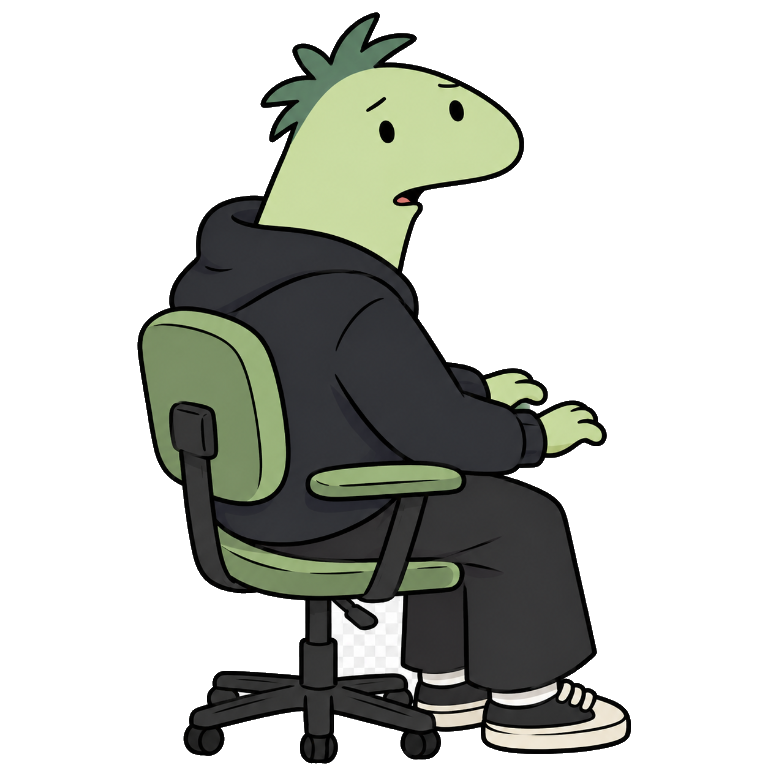

Mandá una imagen
Enviá una foto, GIF o video corto al chat donde está el bot.
01 Un proyecto para WhatsApp
Charlie-bot transforma fotos, GIFs y videos cortos en stickers WebP listos para compartir. Le mandás el contenido por WhatsApp; el bot hace el resto.
Conocé el proyecto
él es Charlie02 Simple por diseño
Enviá una foto, GIF o video corto al chat donde está el bot.
El medio se adapta a formato WebP cuadrado, de hasta 512 × 512.
En unos segundos vuelve al chat, listo para compartir.
03 Detrás del bot
Una automatización personal para explorar integración con WhatsApp, procesamiento de medios y despliegue en contenedores.
Conexión mediante dispositivo vinculado y sesión persistente.
Fotos y medios animados se convierten a stickers WebP.
Imagen multi-stage, usuario sin privilegios y datos persistentes.
Baileys es una librería no oficial. El bot procesa los medios en el entorno donde se ejecuta; no es una conversión local en el navegador.
Hecho para convertir ese “esto sería un buen sticker” en realidad.
Volver arriba